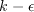
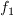

Public Access (formerly Langley Research Center)Turbulence Modeling Resource |
WA-gamma 2-equation Transitional Model
Note: this model page was contributed by Ramesh Agarwal and Jonathan Richter of Washington University in St. Louis.
This web page gives detailed information
on the equations for the
WA-gamma two-equation turbulence+transition model.
The model given on this page is a linear eddy viscosity model, which uses the
Boussinesq assumption for the constitutive relation:
Unless otherwise stated, for compressible flow with heat transfer this model is implemented as described on the page
Implementing Turbulence Models into the Compressible RANS Equations, with perfect gas
assumed and Pr = 0.72, Prt = 0.90, and Sutherland's law for dynamic viscosity.
Return to: Turbulence Modeling Resource Home Page Wray-Agarwal-gamma 2-equation Transition Model
(WA-gamma)
The Wray-Agarwal (WA) model is a one-equation eddy-viscosity model derived from the
The reference for the WA-gamma two-equation turbulence/transition model is:
The transport equations of the WA-gamma model
(written in conservation form) are:
In the wall-distance-free Wray-Agarwal One-Equation Model, the eddy viscosity is given by:
The term
Fonset is used to trigger the intermittency production and is a function of
The model constants for the intermittency equation are as follows:
The local turbulence intensity
is given by:
where The formula for the pressure gradient parameter can be written as
The term can be computed as:
where
S is the mean strain given by
W is the mean vorticity given by
While the
term is active, the transport equation for R behaves as a
one-equation model based on the standard
Other model constants and equations are:
Boundary conditions are not explicitly described in the above reference.
However, the authors recommend the following BCs at walls:
and the following BCs at the freestream:
(Alternately, one could specify

 closure. An important distinction between the WA model and previous one-equation models based on
closure is the inclusion of the cross diffusion term in the
closure. An important distinction between the WA model and previous one-equation models based on
closure is the inclusion of the cross diffusion term in the
 equation and a blending function, which allows smooth switching between the two destruction terms.
The model determines
by a transport equation. However, this model alone cannot model the transition and is therefore modified to include a
correlation based intermittency equation for
equation and a blending function, which allows smooth switching between the two destruction terms.
The model determines
by a transport equation. However, this model alone cannot model the transition and is therefore modified to include a
correlation based intermittency equation for
 ,
employing the local correlation-based transition-modeling concept. In this respect, the modeling philosophy behind
the two equation WA-gamma model is similar to that of the four equation Shear-Stress Transport (SST) transition model
SST-2003-LM2009.
The source code for the WA-gamma model is available at
https://github.com/Ada810.
,
employing the local correlation-based transition-modeling concept. In this respect, the modeling philosophy behind
the two equation WA-gamma model is similar to that of the four equation Shear-Stress Transport (SST) transition model
SST-2003-LM2009.
The source code for the WA-gamma model is available at
https://github.com/Ada810.
![\frac{\partial \rho R}{\partial t}+\frac{\partial \rho
u_{j}R}{\partial x_{j}}=\frac{\partial }{\partial x_{j}}\lbrack (\mu
+\sigma _{R}\mu _{T})\frac{\partial R}{\partial x_{j}}\rbrack +\gamma
\rho C_{1}RS+\rho f_{1}C_{2k\omega }\frac{\partial R}{\partial
x_{j}}\frac{\partial S}{\partial x_{j}}\frac{R}{S}+ P^{\lim
}_{R} \\
-(1-f_{1})\rho C_{2k\varepsilon }min(\frac{R^{2}}{S^{2}}\frac{\partial
S}{\partial x_{j}}\frac{\partial S}{\partial x_{j}}, C_m\frac{\partial
R}{\partial x_{j}}\frac{\partial R}{\partial x_{j}})](WAgamma-trans-eqns/img5.png)
 is used to ensure proper generation of
R for very low values of turbulent intensity Tu:
is used to ensure proper generation of
R for very low values of turbulent intensity Tu:

 ,
,
 , and
, and
 as given in the following equations:
as given in the following equations:


 is the wall distance.
In the original formulation of
(from Menter, F., Smirnov, P., Liu, T., and Avancha, R., "A One-Equation Local Correlation-Based Transition Model,"
Flow, Turbulence and Combustion, Vol. 5, No. 4, 2015, pp. 583-619
(https://doi.org/10.1007/s10494-015-9622-4),
R replaces turbulent kinetic energy k (note that
)
and
is the wall distance.
In the original formulation of
(from Menter, F., Smirnov, P., Liu, T., and Avancha, R., "A One-Equation Local Correlation-Based Transition Model,"
Flow, Turbulence and Combustion, Vol. 5, No. 4, 2015, pp. 583-619
(https://doi.org/10.1007/s10494-015-9622-4),
R replaces turbulent kinetic energy k (note that
)
and
 in the original formulation is replaced by
.
in the original formulation is replaced by
.


The

 term is bounded by
term is bounded by
 for numerical robustness.
The
for numerical robustness.
The  correlation is given by:
correlation is given by:
where
 is a correlation function of
:
is a correlation function of
:
![F_{PG}= \left\{
\begin{array}{ll}
\min (1+C_{PG1}\lambda _{\theta L}, C_{PG1}^{\lim }), & \lambda _{\theta L}\ge 0; \\
\min (1+C_{PG2}\lambda _{\theta L}+C_{PG3}min[\lambda _{\theta
L}+0.0681, 0], C_{PG2}^{\lim }), & \lambda _{\theta L}<0
\end{array} \right.](WAgamma-trans-eqns/img34.png)

 is limited in order to avoid negative values:
is limited in order to avoid negative values:
The wall blocking effect is accounted for by the damping function


equations. The
inclusion of the cross diffusion term in the derivation causes the
additional
term to appear. This term corresponds
to the destruction term in one equation models derived from the standard

closure. The presence of both terms allows the WA model
to behave as either a one-equation
or one equation
model based on the switching function

The blending function was designed so that the
destruction term is active near solid boundaries and the
destruction term becomes active away from the wall near the end of the
log-layer. This function was modified from the original Wray-Agarwal
model to remove its dependence on the wall distance. The following
equations describe the formulation of
for the wall-distance-free
WA model
WA-2018 (AIAA-2018-0593).


where the farfield
is either known from experiment, or assumed.

where
 comes from the freestream turbulence intensity
comes from the freestream turbulence intensity
and

 can be computed from known experimental quantities, or assumed.)
can be computed from known experimental quantities, or assumed.)
Wray-Agarwal-gamma 2-equation Transition Model for Rough Walls (WA-gamma-rough)
The reference for the WA-gamma two-equation turbulence/transition model for rough walls is:
The roughness creates a shift in the log layer of the turbulent boundary
layer. To account for this shift, the value of
in various
correlations used in the intermittency transport equation is replaced
with
 :
:

The viscous damping must also be modified to match the viscous sublayer
and buffer layer profiles in the presence of surface roughness. Thus the equation for
 is replaced by
is replaced by
Furthermore, it turns out that the modification of the viscous damping term above does not provide a large enough increase in the eddy viscosity near the wall, especially for high roughness values. To further increase the eddy viscosity, the destruction coefficient is replaced by:

Return to: Turbulence Modeling Resource Home Page
Page Curators: Christopher Rumsey,
Ethan Vogel,
Clark Pederson
Last Updated: 03/24/2021